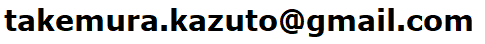

Kazuto Takemura's Website
竹村 和人 (Kazuto Takemura)
研究課題 (Research Interests)
- 北半球テレコネクションパターンの力学的相互作用のメカニズムと予測可能性
Mechanism and predictability for dynamical interaction of multiple teleconnection patterns in the Northern Hemisphere.
履歴書・業績等 (Achievements)
連絡先 (Contact)
e-mail address:
